VAIO Duo 11 のお手入れ （2）
公開日：
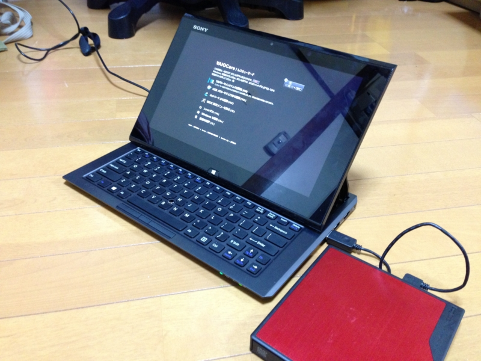
VAIO Duo 11 のお手入れ - だるろぐ のあと、Facebook でいろいろ教えてもらった。勘違いしていた部分もあったので、もう一回 VAIO Duo 11 のリカバリ方法をまとめておこうかと思う。
ASSIST ボタンを押したまま電源を入れる
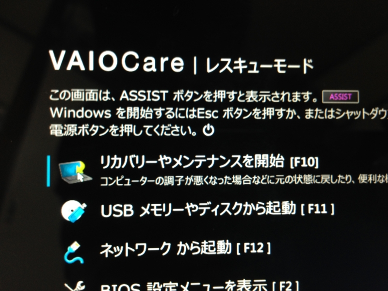
筐体下部裏側にある［ASSIST］ボタンを押したまま電源を入れる。すると、「VAIO Care（レスキューモード）」という画面になる。
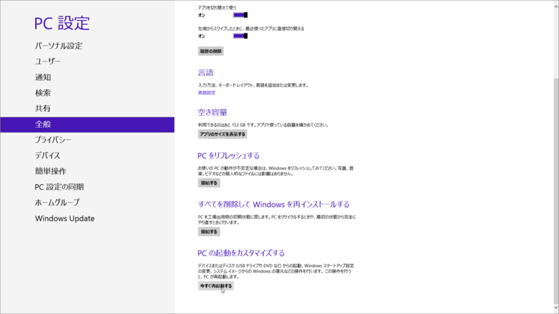
WIndow 8 が起動する状態ならば、［PC 設定］-［全般］-［PC の起動をカスタマイズする］からでもたどり着けるはずだけど、［ASSIST］ボタンを押した方が早い。
この画面では［USB メモリーやディスクから起動］を選択。もしかしたら、一番上のメニューでもいいのかもしれない。その時は次の章を読み飛ばしていいのかも。
起動
リカバリディスクから起動。
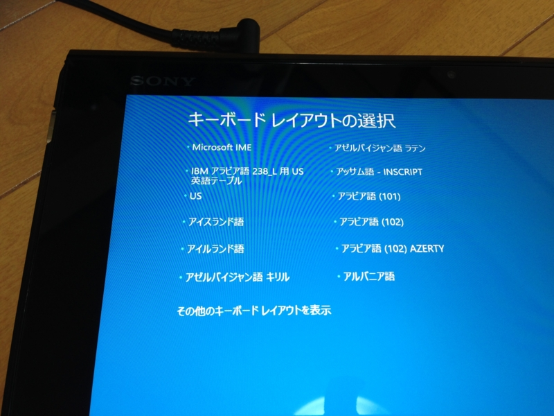
キーボードレイアウトは素直に［Microsoft IME］を選択してよい。汎用入力デバイス扱いであるためか、タッチ操作でも OK なんだな。
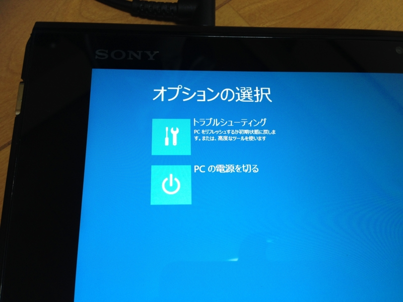
［トラブルシューティング］を選択。
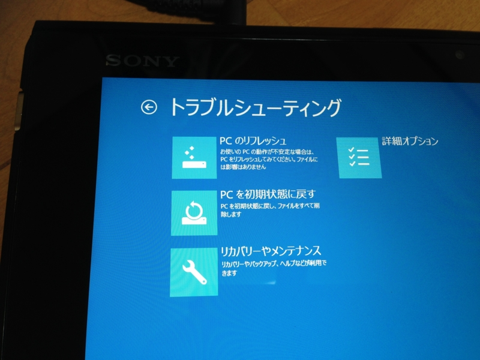
［リカバリーやメンテナンス］を選択。自分はここで［PC を初期状態に戻す］を選んでいたので、先に進めなかった ／(＾o＾)＼
リカバリーツールの起動
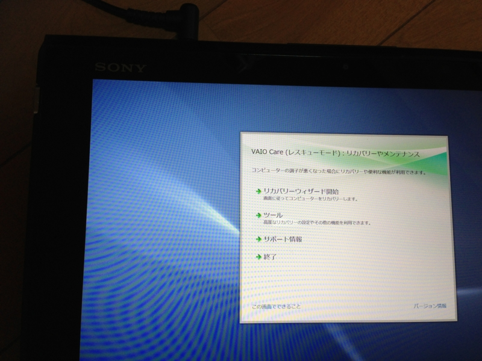
［リカバリーウィザードの開始］を選択。
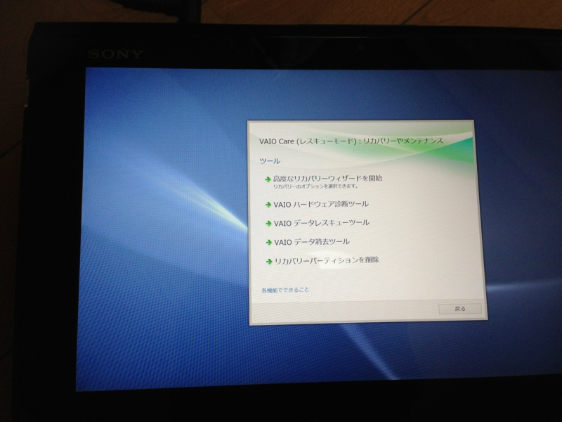
ちなみに、［ツール］の内容はこんな感じ。リカバリ領域の削除なんかが行える。
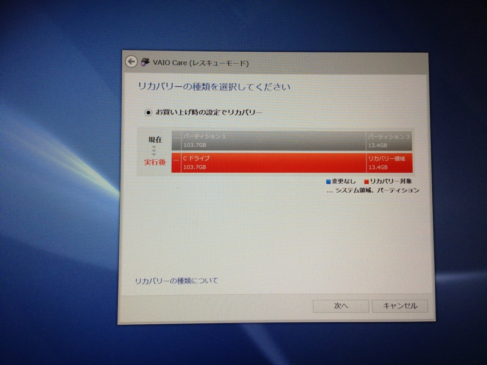
高度なリカバリーウィザードは、パーティションの切り方を選べるのが“高度”。だけど、ラジオボタンの選択肢が一つしかないので選んでも意味がない！
リカバリー処理の実行
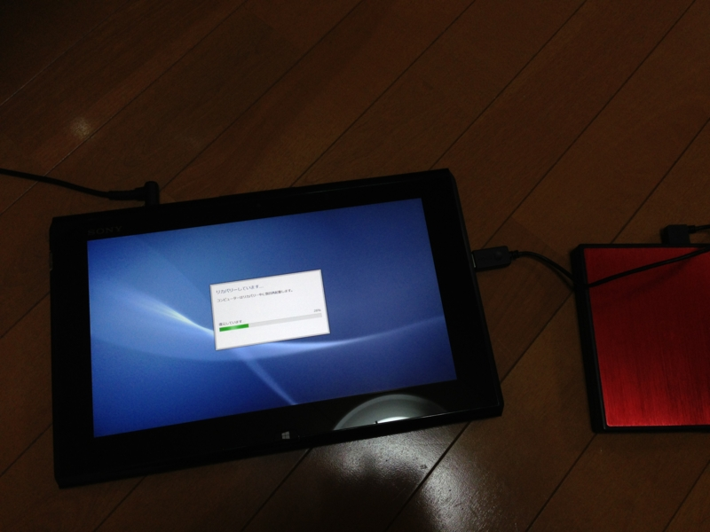
あとは神に踊りをささげながらリカバリーがうまくいくようにお祈りをしましょう ＼(＾o＾)／
おまけ
前回触れた、なぜか Windows Phone SDK 8.0 の英語版がインストールされていたという話。これも解決された。
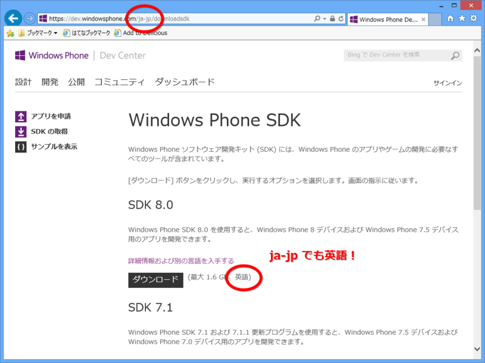
日本語サイトを経由しても、ダウンロードされるのは英語版なんだね！ ちゃんと“別の言語を入手する”というリンクから日本語版をダウンロードしましょう (*´з`)